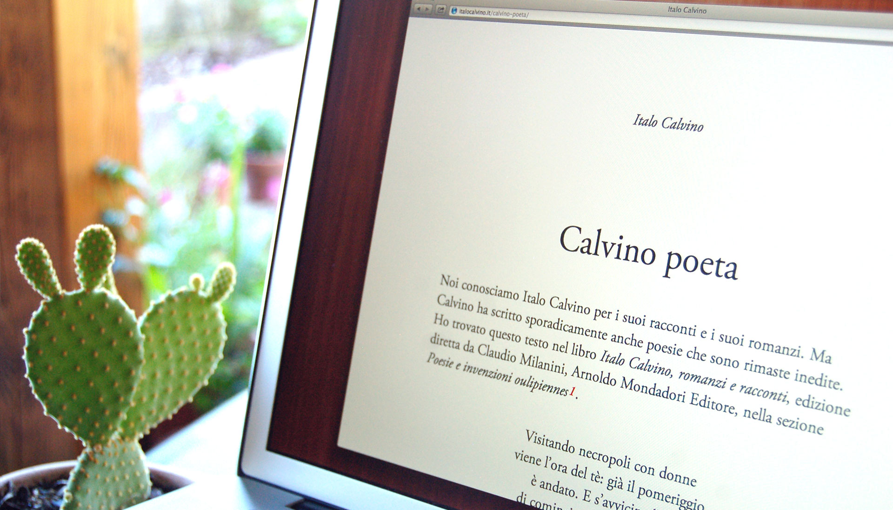
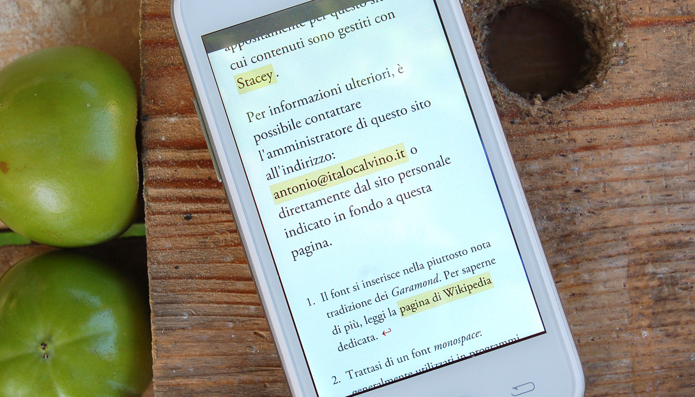

Self-initiated project
A clean, readable collection of pristine articles about the writer Italo Calvino.
Italo Calvino (15 October 1923 – 19 September 1985) was an Italian writer of short stories and novels.
Back in 2002, I registered the domain name italocalvino.it, without knowing anything about creating websites. I just knew that I had to contribute in some way, publishing some personal writings.
During the following years, the website turned into a blog, gathering contributions from people all over the world.
Recently I decided to select a few — very most relevant — articles and drastically simplify the design to obtain a more static resource, strongly focused on legibility.
